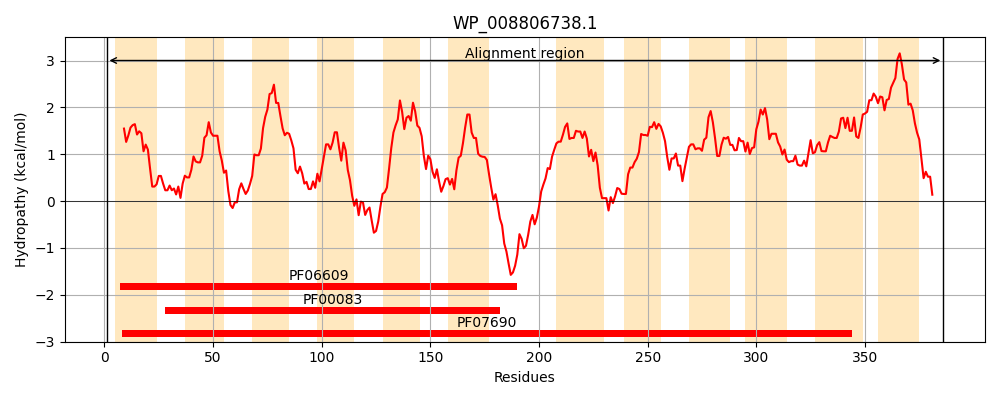
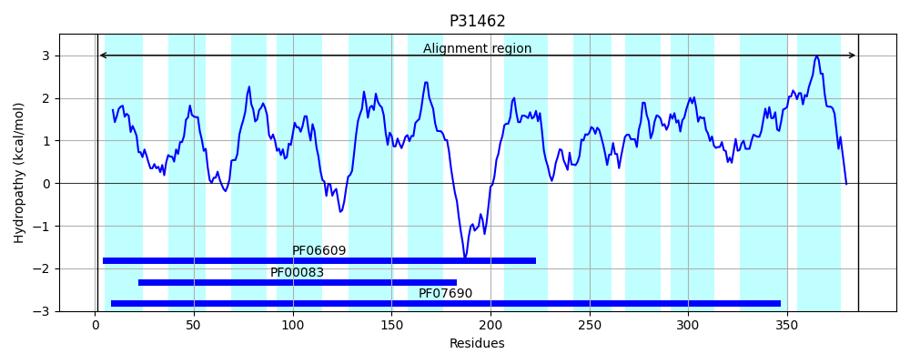
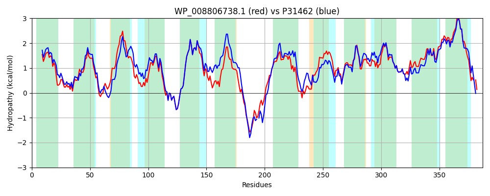

Hit Accession: P31462
Hit TCID: 2.A.1.2.22
Hit Description: gnl|BL_ORD_ID|9771 gnl|TC-DB|P31462|2.A.1.2.22 Hypothetical transport protein yidY - Escherichia coli.
Mach Len: 387
e:0.000000
Query TMS Count : 12
Hit TMS Count: 12
TMS-Overlap Score: 11.400000
Predicted Substrates:CHEBI:3603;chloramphenicol, CHEBI:23888;drug
BLAST Alignment:
Score: 1465 , Bit scores: 568 bits, E-value: 0.0e+00, Alignment length: 387, Percentage identity: 75
Query: 1 MTRFLLCSFALVLLYPSGIDMYLVGLPRIAQDLGASEAQLHIAFSVYLAGMASAMLFAGRIADRSGRKPVAIVGAVIFVVASLLCAQAHASSHFLAGRFIQGIGAGSCYVVAFAILRDTLDDRRRAKVLSLLNGITCIIPVLAPVLGHLIMLKYPWQSLFYTMTGMGVMVGLLSVFILRETRPTAPPQTATPQHGGSESLLNRFFLSRILITTLSVTAILTYVNVSPVLMMEEMGFDRGTYSMAMALMAMISMAVSFSTPFALSLFTPRTLMLTSQVLFLAAGLALSLATRQTLTLIGLGMICAGFSVGFGVAMSQALGPFTLRAGVASSVLGIAQVCGSSLWIWLAAIIGLSAMNMLIGILIACSIVSLVLLLVVTPPR-VAQYDE 386
M+RFL+CSFALVLLYP+GIDMYLVGLPRIA DL ASEAQLHIAFSVYLAGMA+AMLFAG++ADRSGRKPVAI GA +F++AS+ C+ A S+ FLAGRF+QG+GAG CYVVAFAILRDTLDDRRRAKVLSLLNGITCIIPVLAPVLGHLIMLK+PWQSLF+ M MG+ V +LS+FIL+ETRP AP + P+ SESLLNRFFLSR++ITTLSV+ ILT+VN SPVL+ME MGF+RG Y+ MAL A +SM VSFSTPFAL +F PRTLM+TSQVLFLAAG+ L+++ ++L G+ +ICAGFSVGFGVAMSQALGPF+LRAGVASS LGIAQVCGSSLWIWLAA++G+ A NMLIGILIACSIVSL+L++ V P R VA ++E
Sbjct: 1 MSRFLICSFALVLLYPAGIDMYLVGLPRIAADLNASEAQLHIAFSVYLAGMAAAMLFAGKVADRSGRKPVAIPGAALFIIASVFCSLAETSTLFLAGRFLQGLGAGCCYVVAFAILRDTLDDRRRAKVLSLLNGITCIIPVLAPVLGHLIMLKFPWQSLFWAMAMMGIAVLMLSLFILKETRPAAPAASDKPRE-NSESLLNRFFLSRVVITTLSVSVILTFVNTSPVLLMEIMGFERGEYATIMALTAGVSMTVSFSTPFALGIFKPRTLMITSQVLFLAAGITLAVSPSHAVSLFGITLICAGFSVGFGVAMSQALGPFSLRAGVASSTLGIAQVCGSSLWIWLAAVVGIGAWNMLIGILIACSIVSLLLIMFVAPGRPVAAHEE 386 | Protein Hydropathy Plots: |
|---|
|  |  |
Pairwise Alignment-Hydropathy Plot:
|
|---|
|  |